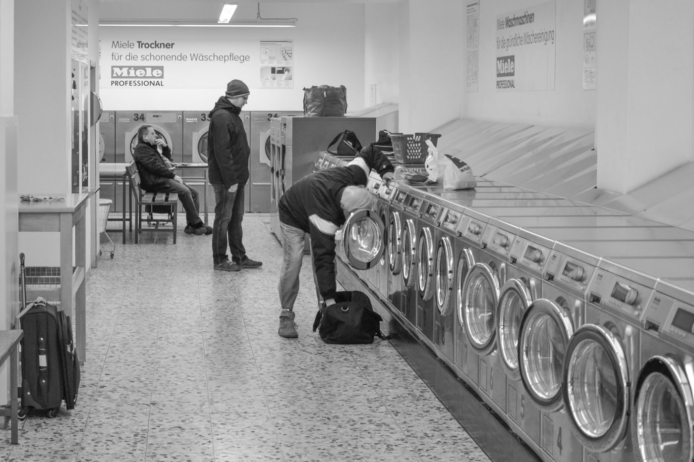

Lexington, Kentucky
Self-service laundry, plus pick-up and drop-off
A self-service laundry in Lexington offering pick-up and drop-off service, ironing, and commercial cleaning services. Open daily 8:00 AM to 10:00 PM.
Lexington, Kentucky
A self-service laundry in Lexington offering pick-up and drop-off service, ironing, and commercial cleaning services. Open daily 8:00 AM to 10:00 PM.
Chevy Chase Laundry is a self-service laundry in Lexington. It offers pick-up and drop-off service, ironing, and commercial cleaning services, and is open daily 8:00 AM to 10:00 PM.


315 S Ashland Ave, Lexington, KY
Daily 8:00 AM to 10:00 PM